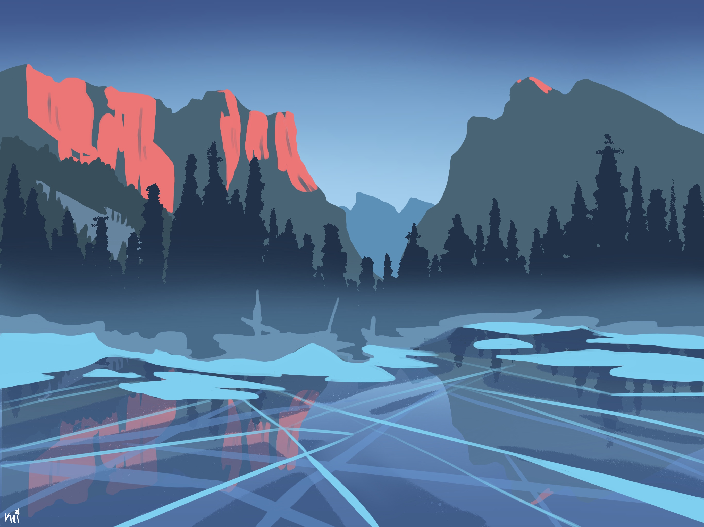
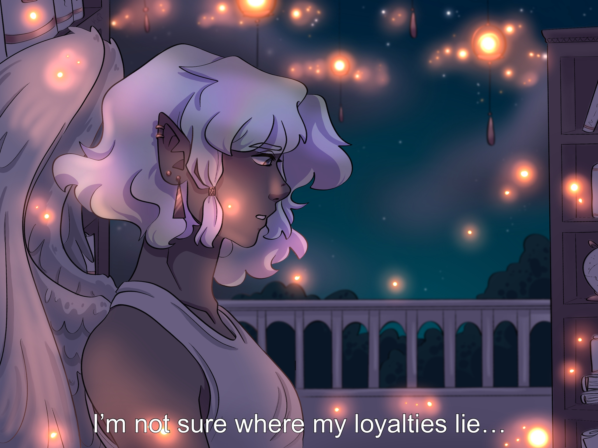
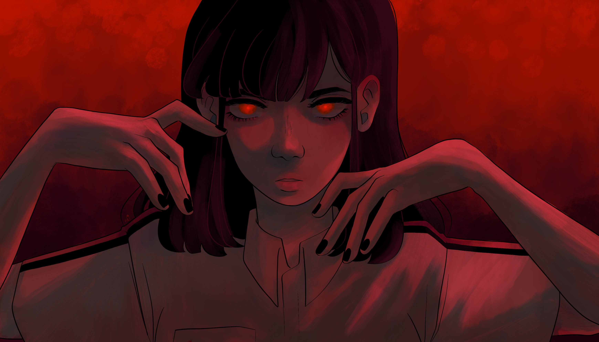

My name is Milo Merriman. I am a multimedia pictorial artist with a specialty in digital painting and traditional media drawing. I have been drawing since I was a child, and I enjoy creating characters, telling stories, and showing the human experience. See more of my work below.